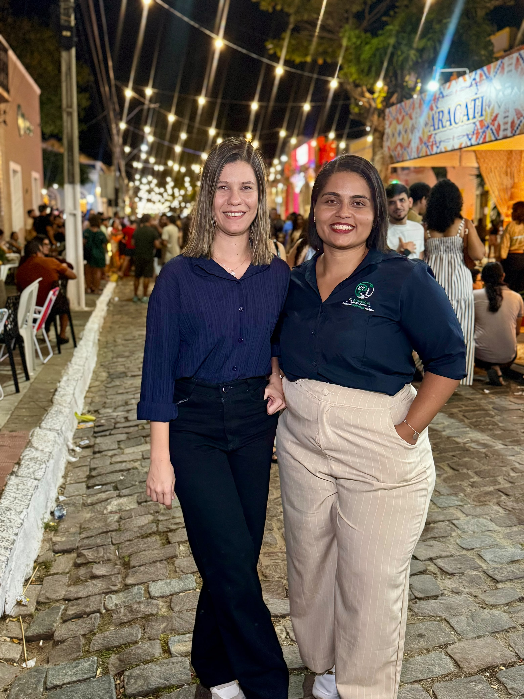

Regularização fundiária, gestão hídrica, licenciamento e capacitação de equipe — acompanhados do diagnóstico até a entrega documental, por quem executa cada etapa na prática.

Engenheira Florestal
Engenheira Florestal, graduada pela Universidade Federal do Piauí (UFPI), com mais de 5 anos de experiência profissional na área ambiental.
Possui pós-graduação em Engenharia Ambiental e Sanitarista, Certificação Ambiental e Consultoria, além de formação em Engenharia de Segurança do Trabalho. Sua trajetória é marcada pela atuação em consultoria, gestão e regularização ambiental, aliando conhecimento técnico, responsabilidade profissional e visão estratégica para o atendimento às demandas de empreendimentos e organizações.
Com uma atuação multidisciplinar, busca transformar requisitos legais e ambientais em soluções técnicas eficientes, seguras e alinhadas à legislação vigente, contribuindo para a sustentabilidade e a regularidade dos empreendimentos.
Química
Química, especialista em Engenharia de Controle Ambiental e com formação em Perícia Ambiental, atuo como Responsável Técnica da PL Ambiental Consultoria.
Possuo experiência em gestão laboratorial, análises físico-químicas, controle de qualidade e técnicas instrumentais, como ICP-OES. Na PL Ambiental, atuo na regularização e licenciamento ambiental, gestão de resíduos, elaboração de documentos e estudos ambientais e atendimento às exigências dos órgãos ambientais.
Unimos conhecimento técnico e experiência prática para oferecer soluções ambientais seguras, eficientes e alinhadas à legislação.
Arraste ou use os indicadores para ver o detalhamento técnico de cada frente.
Processo de parceria em 5 etapas.
Levantamento da situação documental e operacional atual, apontando riscos e pendências reais.
Priorização do que precisa ser resolvido primeiro, com prazos ligados a condicionantes e órgãos envolvidos.
Protocolo e interlocução técnica com o órgão ambiental até a resposta oficial.
Documentação organizada e prazos futuros mapeados, para a próxima renovação não pegar ninguém de surpresa.
Pós-venda com monitoramento contínuo de prazos e condicionantes, mantendo a conformidade em dia depois da entrega.
Você não perde tempo entendendo o que o IBAMA quer dizer com "condicionante" — a gente traduz, cumpre e documenta.
Auto de infração, embargo, multa — o custo de resolver depois é sempre maior que o de prevenir antes.
Outorga, CAR e CTF/IBAMA têm data de renovação — acompanhamos o calendário para o protocolo sair antes do vencimento.
Recebemos você com um diagnóstico técnico inicial.